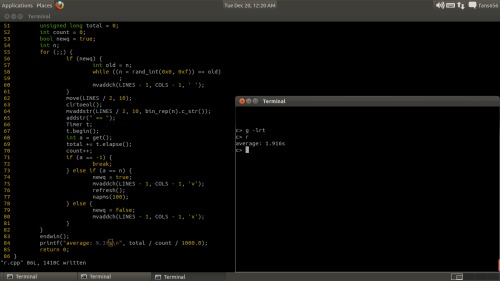
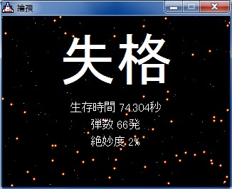
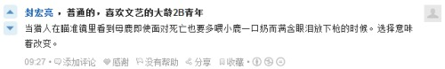

有种你们把这字儿从字典里去掉
平等真的是一件好事吗？ (引子：特德 蒋 《你一生的故事：赏心悦目》)
美貌对于拥有美貌的人意味着一些潜在的利益
共产主义么？我们该把所有人创造的剩余价值平分，而无视有些个体比其他人付出更多？
所谓“自愿”有时候也并不意味着公平，比如整容，我相信自然美于是不去整容，但别人去了，这将我置于劣势
强制所有人都整容或不整容是一种不公平，但“自愿”仍然不公平
矛盾在于这种技术的出现
道德先行，否则技术将会带来双刃剑阴暗的一面，，人类快要走上钢丝，人类的未来一直会是走钢丝
用curses写一个物理模拟，当然限制很多了，但还是禁不住琢磨了琢磨
就发觉各种prerequisites蜂拥而至——坐标是吧？速度是吧？加速度分为private的和global的，，空气阻力！真实的模拟是分子间碰撞产生的，，i5？i7？全都歇菜。。。居然没考虑到质量，，两物碰撞——动能、动量，已然忘差不多了
虽然幻想将来的evolution用的是自己的法则，但就现在练手时你都搞不掂这些简单的物理模拟，哪来的底气~~呵，呵呵
怎么说，少男少女。。。
比较下，比如玛丽和马克思
再赌一个，千与千寻应该比这个高，，

各种404
到家，，狼王那开了着网页，，我这打算还不明朗，
都尽量吧，能安抚得掉自己们潜在的焦虑——总的说来也就是个自洽
不过永远没那么简单，一时的自洽可能造成未来的不自洽，，whatever，我们毕竟能做的也只是走一步看一步，，和一些自欺欺人的“预见”
"First here’s a quick overview: a version control system is like a bank vault. You take your valuables—in our case as developers, these valuables are the source code we write—and deposit them in the bank for safekeeping.(1)"
"(1). As I write this, we’re in the middle of a $700 billion bailout of the American banking system, so maybe a bank isn’t the best of analogies. Don’t think about that part; just think of banks the way they’re supposed to work."
——《Pragmatic Version Control Using Git》
太他妈乐了
好的数据结构可以让代码更简单、更易懂、更高效，，
乃至好的设计可以让系统更易维护、更易扩充，，
之前只是听别人说听书上说，现在有点儿切身感受了
这无所事事的下午，看github去
迷失断断续续看了九集都很扯，但第十集忽然非常惊艳呃——感觉跟瞬间换了导演换了编剧换了摄影似的
any way, 我不会放病毒上来么不是？ :)
PS：大约是目前为止写过的最有成就感的程序——主要是还算炫的效果提供的虚荣，，
发觉长时间严重用脑很虚人呃，加上这四川湿冷湿冷的天，抖了都我

将四位二进制数转换成十六进制数(eg. 0100 == 4)，——是想着为以后汇编提供点基础(/方便?)
恩。。。
average: 2.100s
average: 1.916s
average: 1.780s
average: 1.655s
试试将来能不能到0.5以内
（还有很多呢，十六进制<->十进制、十六进制加法、减法。。。我没觉得这有多么实际有用，但会让人感觉跟计算机更亲近些，，就是这样）
别看，我知道很丑，，我只是给自己mark下
狼王给的那个CodeAcademy的网站第一眼进去挺新奇——以对话的方式展开介绍，，人总是对能互动的事物倾注更多的注意力
于是就想到我们将来的网站——怎么最好地向大众传达我们的理念呢？(要知道一个网站页面如果太复杂很多人第一时间就不再深入了，哪怕东西再好)
我来YY一下吧：
e: 嗨，你叫什么名字？
m: fans656
e: 网名么？
m: ?!!!!!!!!!
知道原因吧？一个robot能做出这样的判断虽然深想之后也没什么，但第一时间仍是足够惊艳的，，而我想的还不只是噱头，e是真的一个具有智能的家伙，，你可以跟她(?)聊天，乃至最后，你可以请她帮你些忙，比如某前我看过的那个有关XXX的网页是什么来着？我想找一部2000年以后比较高分别那么水的电影。。。
恩，这里的潜活动是搜集用户的私人信息——但google、facebook一直就是这么做的，，什么隐私条款的好说，因为用户只是将隐私告诉自己的一个“朋友”
你知道，不必只是QQ聊天那样的文字交互，相互了解之后，e可以展现各种各样的形态，比如一个“云操作系统”，，YY吧，少年！
——all in all，以上只能称作YY而非理想目标什么的是因为这个事物所有可展现的shocking的根源都只在于一点：智能
而，你懂的
20位地址线可以寻址1M内存，32位地址线可以寻址4G内存，64位地址线可以寻址。。。。
16777216T内存(大约一千六百万)，，恩。。。1T=1024G
也就是说，(我无责任猜测下)你可以把日本友人有史以来拍过的所有毛片全装进——没错，内存里
大二下就开编译原理，大三上就开操作系统，，我擦啊。。。

老了，散了，撤了
文件、内存、链接、装载、页、虚拟内存。。。已然想到了未来的更进步形态的程序环境：
不再有内存、硬盘之分，这些底层的东西完全由操作系统来handle，呈现给程序的是一个统一的平坦的空间，，
CS里分层的思想确实威力，——没准上升到一种哲学上的抽象方法
更进一步：一台PC提供的虚拟空间中程序们的生生死死——云提供的虚拟空间中程序们的生生死死，，这就是evolution了嗨！
我真就把这当次说说吧
想到这么个事儿：以后真开发出mnote的时候可能会想要把曾经的这些blog、日记、聊天记录各种都组织起来成为notes的形式，但这散落各处的信息整合起来显然麻烦，，并且平日也有很多碎片式的东西找不到合适的地方安放——
那么也许从现在起统一一个。。。呃，也许就只word文档什么的，有文字有图片带时间的仓库，不必结构很清晰，只要将来容易用程序整理出来就成
whatever，说得很散乱，，只当记录
忽然想将来工作了还会不会有学校里这种学习的热情？恩。。。是个(可以假想的)危机
在听梁静茹，，我实在得要凡俗鲜艳些的东西来缓缓
（这要成人人了么？）
vim用多了总是习惯性地打错一个单词后Ctrl+w，然后。。。firefox的tab就这么悲剧地被关了
Dido的那首Thank You真挺异境的呃 (可惜烂下半身)，想狼王你要是拍一特风格较小资的小品剧拿这个做片尾曲应该非常不错
恩。。。终于把这天杀的计算器写出来了，BS(bjarne stroustrup)真BT (名字也perverse)
http://davidwinter.me/articles/2006/12/06/change-your-terminal-prompt-lost-style/
感觉正在into Linux的世界，，恩。。参见dr带gdb的那篇
这是最舒服的节奏—— 并非刻意去follow，，话说我还希望从源码级别(operating system)自然而然地学linux呢
大约就这两天来看的或感知的一些，
可设想的近的远的未来，人生什么的balabala...
仿佛自己更小了，又仿佛更站立、更靠谱了
显然是近乎不可能表述出这种状态的——
思维、情绪、氛围、意识等等的合体的那么个东西，这东西跟文字的表达之间有条巨的鸿沟，，曾某时我近乎已经接受表达不必还原，表达作为再创造也是可取可贺的，
但现在，我多么希望能找到一种方法来消除掉这条鸿沟，，我们作为一个个智能生物的个体，能够看到我们自己、记住我们自己，
不再那么像迷雾中的水滴那么样朝生夕死，云云
哎，烂尾了
的确，当时发给狼王“挫败”的短信时自己脑子里就没真想着挫败——想的跟他回的内容是一样的。一个只是看上去简单的东西，，但我们很欢迎这个，一则说不断破自己的处，二则全是简单的就没意思了
比如，一个双人的(贪吃蛇)游戏，你碰到对方也要挂，或者只是被挡住，，唔。。。细节不说了——乃至多人的、在线的 (a note page?)
但这些可能只是开发人员的热情，用户是不买账的，，比如泡泡堂，以我这刚写完贪吃蛇的幼儿园小朋友来看，big job。但我也不去玩
不，这些还不是我想说的，，现实的商业啊项目啊什么的说实话都不是我真正感兴趣的。我是想到很多条5pixels身长的小蛇在偌大的地图里游动，一段时间吃不到食物它就会死，，它们的行为函数到底要怎么写呢？一种新的语言描述输入输出然后函数体是可以自适应的balabalabala。。。？
还有东西，拾不起来了，，算了
狼王你晚了啊，早两年现在你有机会拿个mac啊
写了两天的贪吃蛇。。。终于写出来了，还有bug...我擦
《失控》看不下去了，太监了吧
刚起床
忽想到m最初时如果做成软件形态其实可以不要服务器——可以利用网盘、邮箱之类的资源，，当然这是个人使用，如果要构成社区，也许可以利用P2P然后一台便宜的种子服务器
呃，这些设想都相对比较远，可能大三可以开始着手尝试
十三钗啊十三钗，我之前没文化一直打成十三插呢
张艺谋我日你妹，douban我草泥马，
哎，冷静
《失控》看到第四章，总的说来有点神棍（开始以为是有点儿卡尔萨根，但可能还不如，也可能没有可比性），但是本值得看的书，很多观念挺奇特的——不一定所有人所有知识背景的人都值得看
那个，好像是用一个类似黑洞性质的壳把自己的星系封闭起来，这是一个对外的宣言：“我们已经砍断四肢、挖掉眼睛，我们对你们是无威胁的，所以，你们也不必杀掉我们了”
通过恒星天线向宇宙广播了一颗星系的坐标，随后，这个星系被摧毁了——不需要调查，不需要确认，最简单的办法就是干掉它；这是宇宙时代最廉价、最终极的武器，外面有着满满的伺机的猎手，你只需要告诉他们
。。。人类像个傻孩子一样大叫大嚷想让外界知道自己的存在。。。
“从创世纪的第一天算起，几十亿年之后，植物才出现，又过了大约十五亿年，鱼类才露面。再过一亿年，昆虫登上舞台。。。然后一切才开始加快前进的步伐。爬行类、恐龙、哺乳类在最近的一亿年里出现。而聪明的古猿，包括早期人类，在最近两千万年才出现。”什么不能信任？两万光年的距离，人类从结绳记事到星系航行只用了五千年；你承担不起这样的风险
在你周围一万个文明中，哪怕九千个是善意的、愿意帮助你的，但只要有一个拥有恶意，你就无法承担暴露自己的后果，，为了生存（进化论：生存并非真是你的目标，而是没有这种目标的“你”全都消亡了），你必须藏好自己、杀死别人
光速、空间造成的无法信任促成了黑暗森林，，自然是冰冷的、阴森森的钢铁法则，没有理性、文明的容身之地
记得后来里面那些残酷的、血淋淋的隐藏手段么？
以及：”把海弄干的鱼不在“

我操你妈的
http://www.zhihu.com/question/19986030
偶然新开mono一张专辑《You Are There》 (http://www.xiami.com/album/310862)
开曲就湿了，，ohhhhhhhh
what do i want?
狼王无视，，这篇很可能自己将来看着都蛋疼